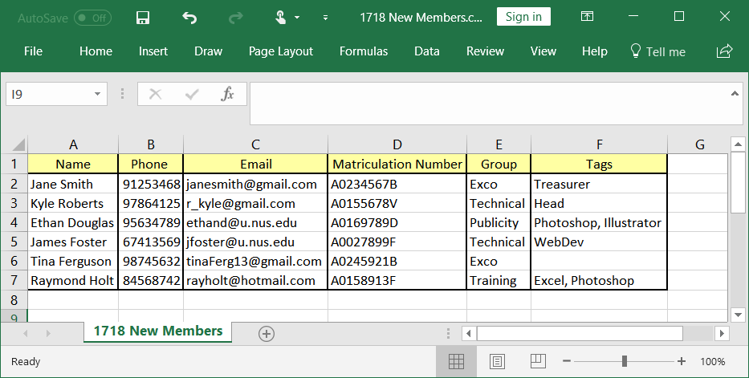

1. Overview
Club Connect is a computer application targeted at club members who are students at the National University of Singapore (NUS). It aims to make the tedious process of club management easier and more effective.
Club Connect is an application that would be preferred by those who prefer using the keyboard over a mouse, i.e., it uses a Command Line Interface (CLI). All output is displayed in a Graphical User Interface (GUI) - which is just computer jargon for a display that includes panes, menus and message boxes.
2. About this portfolio
This project portfolio documents my contributions to the Club Connect project. It includes a summary of features that I implemented, other ways in which I contributed to the project, and extracts of my documentation in the Club Connect User Guide and Developer Guide.
3. Summary of contributions
-
Major enhancement: This enhancement added functionality to manage information of club members.
-
What it does: The import feature adds all members in a specified CSV (comma separated values) file to Club Connect. Conversely, the export feature makes it possible to add the details of all members in Club Connect to a CSV file.
-
Justification: During recruitment events (such as the annual Student Life Fair at the National University of Singapore), club representatives collect data of prospective members using software like Microsoft Excel. They will then have to update Club Connect’s database to include the data of the inducted members. The
importcommand allows Executive Committee (Exco) members to add all these new members in one go.
For club administration tasks where you need to get a list of all members of the club and their details (signing up all members to NUSync, for example), theexportcommand comes in handy. It generates a file containing all the relevant information in a user friendly form. This information can then be easily managed and modified outside the application. -
Highlights: This enhancement is an end-to-end feature and makes use of almost all components of the software, from
CommonstoStorage. Though the implementation of these features is intuitive and makes use of existing code wherever possible, it was challenging as it required the creation of a CsvUtil class (to handle parsing) from scratch. It is also made robust in order to prevent frustration in users. -
Relevant pull requests:
-
-
Minor enhancement: This enhancement added support for a profile photos for each member.
-
What it does: This enhancement allows the logged in members to change their profile photo. Similarly, they can choose to remove their profile photo as well.
-
Justification: Since most student clubs have a large number of members, members may find it difficult to identify others by name alone. Having the ability to add a profile photo for yourself makes it much easier for others to identify you when they need to contact you.
-
Highlights: This enhancement is an end-to-end feature and makes use of all components of the software, from
CommonstoUi. It was challenging as the feature had to handle the image files efficiently, and had to allow the application to remain portable.
-
-
Code Contributed : [Functional code] [Test code]
-
Other contributions:
-
Project management on GitHub:
-
Created necessary labels
-
Updated descriptions and labels of PRs (where necessary)
-
Organised and assigned issues
-
Managed releases
v1.5rcandv1.5(2 releases)
-
-
Enhancements to existing features:
-
Documentation:
-
Community:
-
4. Contributions to the User Guide
Given below are sections I contributed to the User Guide. They showcase my ability to write documentation targeting end-users. |
4.1. Major Enhancement : Member Data Management
This section contains extracts from the User Guide that are related to management of the data of members.
Start of Extract (from User Guide)
Importing members into Club Connect: import (Since v1.4)
Imports the details of all valid members in the specified CSV file into Club Connect.
Format: 'import CSV_FILE_PATH`
Alias: imp
This command is for Exco members only.
|
You cannot overwrite existing members (i.e. you cannot edit details of members in Club Connect) by using the import command.
|
| You can save a Microsoft Excel spreadsheet as a CSV file by changing the file extension while saving the file. |
| TO get the absolute path to the CSV file, see Absolute path of a file. |
Examples:
-
import C:/Users/John Doe/Desktop/members.csv
Imports all members in the "members.csv" file onJohn Doe's Desktop to Club Connect. -
import /Users/Jane Doe/Desktop/clubbook.csv
Imports all members in the "clubbook.csv" file onJane Doe's Desktop to Club Connect.
Exporting Club Connect data: export (Since v1.3)
Exports the data of all members in Club Connect to a CSV file.
Format: 'export CSV_FILE_PATH`
Alias: exp
| You can import the generated CSV file from Microsoft Excel to get an even better view of the data. |
| TO get the absolute path to the CSV file, see Absolute path of a file. |
Examples:
-
export C:/Users/John Doe/Desktop/members.csv
Exports all members in Club Connect to the "members.csv" file onJohn Doe's Desktop. -
export C:/Users/Jane Doe/Desktop/clubbook.csv
Exports all members in Club Connect to the "clubbook.csv" file onJane Doe's Desktop.
End of Extract (from User Guide)
4.2. Minor Enhancement : Profile Photo
This section contains extracts from the User Guide that are related to profile photos.
Start of Extract (from User Guide)
Changing your profile photo : changepic (Since v1.2)
Changes the photo displayed on your profile to the specified photo.
Format: changepic PHOTO_PATH
Aliases: pic, profilepic
| Profile photos are displayed with a 4:3 height to width ratio in Club Connect. |
| It may take longer to set your profile photo to an image whose file size is above 1 MB. |
| To get the absolute path to the photo, see Absolute path of a file. |
Examples:
-
changepic C:/Users/John Doe/Desktop/john_doe.jpg
Changes your profile picture to the "john_doe.jpg" image onJohn Doe's Desktop. -
changepic C:/Users/Admin/Downloads/CathyRay.png
Changes your profile picture to the "CathyRay.png" image in your Downloads folder.
Removing your profile photo : removepic (Since v1.5)
Removes your profile photo and sets it back to Club Connect’s default profile photo.
Format: removepic
Aliases: rmpic, defaultpic, delpic
This command cannot be undone. You will have to set your profile photo by using the changepic command again.
|
| If you have not set a profile photo, your profile photo will remain as the default photo. |
End of Extract (from User Guide)
5. Contributions to the Developer Guide
Given below are sections I contributed to the Developer Guide. They showcase my ability to write technical documentation and the technical depth of my contributions to the project. |
4.1. Major Enhancement : Member Data Management
This section contains extracts from the Developer Guide that are related to management of the data of members.
Start of Extract (from Developer Guide)
Importing Members
Design Considerations
Aspect: Implementation of ImportCommand
-
Alternative 1 (current choice): Implement parser for CSV files ourselves
-
Pros: Greater control over what the format in the file to be imported from should be
-
Cons: Harder to implement, less flexible in terms of how data can be stored in the file as the data values are not binded to tags
-
-
Alternative 2: Use existing libraries (such as OpenCSV and Jackson)
-
Pros: More flexible in terms of how the data can be stored in the import file
-
Cons: Security issues or bugs in the external library cannot be fixed, licensing issues, difficult to use due to poor documentation
-
Aspect: Input file format
-
Alternative 1 (current choice): Import from a CSV file
-
Pros: Easier for users to create and modify their data in a CSV file
-
Cons: Implementation becomes more complex and may become less robust as support for parsing data from CSV files has to be added.
-
-
Alternative 2: Import from a XML file
-
Pros: Easier to implement and parse data, as the code already supports the reading of data from XML format
-
Cons: Harder for non-technical users to create and modify their data in a XML file
-
Exporting Members
Design Considerations
Aspect: Output file format
-
Alternative 1 (current choice): Export to a CSV file
-
Pros: More user-friendly in terms of understandability, generated file is compatible with the
importcommand -
Cons: Harder to implement as support for converting data of
Memberto CSV format needs to be added
-
-
Alternative 2: Export to a XML file
-
Pros: Easier to implement and as the code already supports the writing of data in XML format
-
Cons: Raw file provides a less intuitive view of data, generated file is not compatible with the
importcommand
-
End of Extract (from Developer Guide)
4.2. Minor Enhancement : Changing Profile Photo
This section contains extracts from the Developer Guide that are related to changing your profile photo.
Start of Extract (from Developer Guide)
Changing Profile Photo Mechanism
Current Implementation
The changepic mechanism of Club Connect is facilitated by the ChangeProfilePhotoCommand class and is event-driven.
It allows members to modify their profile photos displayed in the application.
To facilitate this, it makes use of the ProfilePhoto class. ProfilePhoto
Currently, the ChangeProfilePhotoCommand extends from the Command class, and not from UndoableCommand.
Refer to Figure 52 for the UML diagram.
The ProfilePhoto class consists of a String attribute to store the file path of the profile photo.
Figure 52. ChangeProfilePhotoCommand UML Diagram
The displaypic command involves the use of multiple components of Club Connect.
Below, Figure 53 shows the interactions betweeen these components.
As you can see, the ChangeProfilePhotoCommand is driven by the ProfilePhotoChangedEvent.

Figure 53. High Level Sequence Diagram for changepic PATH Command
ChangeProfilePhotoCommandParser is responsible for parsing the changepic command.
It returns a ChangeProfilePhotoCommand object after parsing the photo file path.
Figure 54 depicts the Sequence Diagram for interactions within the Logic component for the execute("changepic C:/Users/Admin/Desktop/ photo.png") API call.
_Figure 54. Interactions Inside the Logic Component for the changepic C:/Users/Admin/Desktop/ photo.png Command
The ChangeProfilePhotoCommand#execute() method invokes the addProfilePhoto() method from model.
Complying with the rules of abstraction, the Logic component calls on Model to handle the internal details for updation.
The actual reading of the profile photo from the path provided is done by the Storage component.
It copies the photo as a bitmap image file (.bmp) to the Club Connect application’s resources.
The code used for reading and copying the file is as follows:
@Override
public void copyOriginalPhotoFile(String originalPhotoPath, String newPhotoName) throws PhotoException {
BufferedImage originalPhoto = null;
try {
logger.info("Profile Photo is being read from " + originalPhotoPath);
URL photoUrl = new URL(URL_PREFIX + originalPhotoPath);
newPath = SAVE_PHOTO_DIRECTORY + newPhotoName + PHOTO_FILE_EXTENSION;
InputStream photoStream = photoUrl.openStream();
createPhotoFileCopy(photoStream, newPath);
} catch (IOException ioe) {
// ... exception handling ...
}
}
public void createPhotoFileCopy(InputStream photoStream, String newPath) throws PhotoWriteException {
// ... logging ...
try {
FileUtil.createDirs(new File(SAVE_PHOTO_DIRECTORY));
Files.copy(photoStream, Paths.get(newPath), StandardCopyOption.REPLACE_EXISTING);
} catch (IOException ioe) {
// ... exception handling ...
}
}The logged in member’s details are then updated to include this new profile photo.
Design Considerations
Aspect: Implementation of ChangeProfilePhotoCommand
-
Alternative 1 (current choice): Logged in member can only change his/her own profile photo
-
Pros: Easy to implement, makes intuitive sense
-
Cons: There is no way for Exco members to ensure that members have appropriate profile photos
-
-
Alternative 2: Exco members can change any member’s profile photo
-
Pros: Exco members have the ability to exercise control over members' profile photos
-
Cons: Implementation becomes more complicated
-
Aspect: Source files of profile photos
-
Alternative 1 (current choice): Make a copy the source image provided to the applications resources
-
Pros: Application becomes portable and independent from the rest of the system. Members can delete the original file from the computer, without affecting the Club Connect Application
-
Cons: Changes made to the original source images are not reflected in the application
-
-
Alternative 2: Always read the profile photo from the file path provided
-
Pros: Changes made in the source image are reflected in the application
-
Cons: Application becomes highly dependent on the system, in terms of profile photos
-
End of Extract (from Developer Guide)
Appendix A : Other Sections in the User Guide
Given below are other sections I contributed to the User Guide. |
A.1. Delete tag feature
Start of Extract (from User Guide)
Deleting a tag : deletetag (Since v1.1)
Deletes the specified tag from all members in Club Connect.
Format: deletetag t/TAG
Aliases: rmtag, deltag
This command is for Exco members only.
|
Examples:
-
deletetag t/Treasurer
Deletes theTreasurertag for all members tagged withTreasurerin Club Connect. -
deletetag t/EventInCharge
Deletes theEventInChargetag for all members tagged withEventInChargein Club Connect.
End of Extract (from User Guide)
A.2. General additions
Start of Extract (from User Guide)
Here are some things to take note of before you begin using Club Connect.
Valid Entries
-
Names of members should only contain alphabets, numbers and spaces. The name should not be blank and cannot begin with a space (" ").
-
Phone numbers can only contain numbers, and should be at least 3 digits long.
-
Email IDs of members should be of the format: username@emailservice.com and should not contain spaces.
-
Matriculation Numbers should follow the format of those at NUS. So, they must begin with a letter, followed by 7 digits and should end with a letter.
-
Groups should only contain letters and digits. They must not be empty.
-
Tags should also only contain letters, digits and hyphens. They cannot be empty, and cannot begin with a hyphen ('-').
Tips
Not satisfied with your productivity while using Club Connect? Can’t remember the command names? Here are some tips and tricks:
-
Data transfer to another computer
-
Install the Club Connect app on the other computer.
-
Overwrite the empty data file it creates (
clubbook.xml) with the data file from your previousClub Connectfolder.
-
-
Alternative command names If you do not like the default command name or feel that it is too long, you can use one of its aliases to execute the command instead.
Example: The
changepiccommand usespicas an alias. So, both commands shown below can be used change your profile picture to the "john_doe.jpg" image on John Doe’s Desktop.
changepic C:/Users/John Doe/Desktop/john_doe.jpgpic C:/Users/John Doe/Desktop/john_doe.jpg
-
Absolute path of a file To get the absolute path of a file on Windows, follow these steps:
-
Right-click on the file and select
Properties. This will bring up a window containing the properties of the file. -
Locate the path in the
Generalsection, next to the keywprdLocation. -
Add the complete name of the file (e.g. "/file_name.jpg") to the end of this location to get the absolute path to the file.
-
To get the absolute path of a file on MacOS, follow these steps:
-
Select the file and press Command+I to open the information window for it.
-
Locate the path in the
Generalsection, next to the keywordWhere. -
Add the complete name of the file (e.g. "/file_name.jpg") to the end of this location to get the absolute path to the file.
-
CSV format for
import
In order to successfully import data of members from the specified file, it has to follow the format shown in Figure 4.Figure 1. Required format of data in the fileThe columns in the import file should be in the same order as shown in the figure above. All the tags of a member should be in a single cell, separated by commas (","). Also, to successfully import the data of a member, you have to make sure that their details conform to the [constraints]. Figure 5 shows some examples of invalid entries with the corresponding reasons in red.
 Figure 2. Invalid format of data in the file (reasons are shown in red)
Figure 2. Invalid format of data in the file (reasons are shown in red)
Coming in v2.0
-
Encrypt data files :
encrypt
Encryption is the process of encoding information in such a way that only authorized parties can access it and others cannot.
By encrypting Club Connect’s data files, you can ensure that others will not be able to read members' information if they open the files. Do note, however, that this may slightly affect performance. -
Chat with any member :
chat INDEX
You can message other members in real time without ever needing to leave the Club Connect application. -
Group Chats :
gchat GROUP_NAME
Tired of sending the same message to multiple members? The Group Chat feature allows you to have conversations as a group so that everyone is kept in the loop. -
Submit anonymous feedback :
feedback
Not satisfied with certain aspects of the club? Afraid to speak up?
Fret not, Club Connect provides you with a platform to voice your opinions. And yes, we guarantee your anonymity.
End of Extract (from User Guide)
Appendix B : Other Sections in the Developer Guide
Given below are other sections I contributed to the Developer Guide. |
Start of Extract (from Developer Guide)
Glossary
- Abstraction
-
In Object-oriented Programming, abstraction is the mechanism by which users are provided with only the functionality, and not the implementation details. So, abstraction provides users with information on what an object does, rather than how it does it.
- Attribute
-
An attribute is a type of detail of a member. For example, an attribute of a member could be phone number, email, matriculation number and so on.
- Bitmap Image File
-
Bitmap Image file (BMP) is a file format that stores bitmap graphics data. It is device independent and you do not need a graphics adapter to display it. Images stored as BMP files can be losslessly compressed.
- Club
-
A student organisation or association at the National University of Singapore. These include (but are not limited to) Faculty/Non-Faculty clubs, Academic/Non-Academic Societies, Interest Groups and Sports groups. Some examples include Computing Club, Mathematics Society and Basketball Varsity Team.
- Club Book
-
The internal database of Club Connect that stores member, task and poll information.
- CLI
-
Acronym for Command Line Interface. It is a purely text-based interface for software. User respond to visual prompts by typing single commands into the interface and receive results as text as well. An example of CLI would be MS-DOS.
- CSV
-
A comma-separated values (CSV) file is a text file that uses a comma (",") to separate values. This allows data to be saved in a table structured format.
- Entry
-
A value added to a member’s attribute.
- Exco member
-
A member who is part of the Executive Committee of the club. Exco members are seen as the leaders of the club. Exco members can execute certain commands and view features that are not available to other members of the club.
| An Exco member is still regarded as a member. |
- GUI
-
Acronnym for Graphical User Interface. In a GUI, the software interface consists of graphical icons, menus and/or other visual indicators to display information. Users can typically interact with these graphics, rather than just using text in the command line. For example, all Windows operating systems have a GUI.
- Mainstream OS
-
Windows, Linux, Unix, OS-X
- Member
-
One of the members who compose a group organization. They are the target users of our application.
- Private contact detail
-
A contact detail that is not meant to be shared with others
- Profile
-
Visual display of the information (attributes and entries) of a member.
Importing members
-
Importing members as an
Excomember-
Prerequisites: You must be logged in to Club Connect as an
Excomember. -
Test case:
import C:/Users/John/Desktop/correctly_formatted_data.csv
Expected: All members in the fileC:/Users/John/Desktop/correctly_formatted_data.csvwho have valid entries and do not share the same matriculation member with any member in Club Connect are added toClub Members. The number of members imported is shown in the status message. Timestamp in the status bar is updated. -
Test case:
import C:/Users/John/Desktop/data_in_incorrect_format.csv
Expected: No members are added to Club Connect. Error details are shown in the status message. Timestamp in the status bar is updated. -
Test case:
import C:/Users/John/Desktop/does_not_exist.csv
Expected: No members are added to Club Connect. Error window pops up. Error details are shown in the status message. Status bar remains the same. -
Incorrect import commands to try:
import,import C:/Users/John/members.txtExpected: No members are added to Club Connect. Error details are shown in the status message. Status bar remains the same.
-
-
Importing members as a non-
Excomember-
Prerequisites: You must be logged in to Club Connect and you must not be an
Excomember. -
Test case:
import C:/Users/John/Desktop/correctly_formatted_data.csv
Expected: No members are added to Club Connect. Command requires Exco-member shown in status message. Status bar remains the same. -
Test case:
import C:/Users/John/Desktop/data_in_incorrect_format.csv
Expected: Similar to previous. -
Incorrect import commands to try:
import,import C:/Users/John/members.txtExpected: No members are added to Club Connect. Error details are shown in the status message. Status bar remains the same.
-
Exporting members
-
Exporting members as a member
-
Prerequisites: You must be logged in to Club Connect.
-
Test case:
export C:/Users/John/Desktop/does_not_exist.csv
Expected: Writes data of all members in Club Connect toC:/Users/John/Desktop/does_not_exist.csv. Success message is shown in the status message. Status bar remains the same. -
Test case:
export C:/Users/John/Desktop/already_exists.csv
Expected: OverwritesC:/Users/John/Desktop/already_exists.csvwith data of all members in Club Connect. Success message is shown in the status message.Status bar remains the same. -
Incorrect export commands to try:
export,export C:/Users/John/members.txtExpected: No members are exported to a file. Error details are shown in the status message. Status bar remains the same.
-
Changing profile photo
-
Changing your profile photo when you have selected yourself
-
Prerequisites: You must be logged in to Club Connect.
-
Test case:
changepic C:/Users/John/Desktop/valid_photo.jpg
Expected: Your profile photo changes to the image atC:/Users/John/Desktop/valid_photo.jpg. Your image in theLogged inpanel, theClub Memberspanel, and theMember Profilepanel changes to this new photo. Timestamp in the status bar is updated. -
Test case:
changepic C:/Users/John/Desktop/does_not_exist.jpg
Expected: Your profile photo is unchanged. Error window pops up. Invalid photo path is shown in status message. Your image in theLogged inpanel, theClub Memberspanel, and theMember Profilepanel remains the same. Status bar remains the same. -
Test case:
changepic C:/Users/John/Desktop/
Expected: Your profile photo is unchanged. Error details are shown in status message. Your image in theLogged inpanel, theClub Memberspanel, and theMember Profilepanel remains the same. Status bar remains the same. -
Other incorrect change photo commands to try:
changepic,changepic C:/Users/John/image.bmpExpected: Similar to previous.
-
-
Changing your profile photo when you have not selected yourself
-
Prerequisites: You must be logged in to Club Connect.
-
Test case:
changepic C:/Users/John/Desktop/valid_photo.jpg
Expected: Your profile photo changes to the image atC:/Users/John/Desktop/valid_photo.jpg. Your image in theLogged inpanel and theClub Memberspanel changes. Timestamp in the status bar is updated. -
Test case:
changepic C:/Users/John/Desktop/does_not_exist.jpg
Expected: Your profile photo is unchanged. Error window pops up. Invalid photo path is shown in status message. Your image in theLogged inpanel and theClub Memberspanel remains the same. Status bar remains the same. -
Test case:
changepic C:/Users/John/Desktop/
Expected: Your profile photo is unchanged. Error details are shown in status message. Your image in theLogged inpanel and theClub Memberspanel panel remains the same. Status bar remains the same. -
Other incorrect change photo commands to try:
changepic,changepic C:/Users/John/image.bmpExpected: Similar to previous.
-
Removing profile photo
-
Removing your profile photo when it is not the default photo and you have selected yourself
-
Prerequisites: You must be logged in to Club Connect. You must have changed your profile photo.
-
Test case:
removepic
Expected: Your profile photo changes to Club Connect’s default profile photo. Your image in theLogged inpanel, theClub Memberspanel, and theMember Profilepanel changes. Timestamp in the status bar is updated.
-
-
Removing your profile photo when it is not the default photo and you have not selected yourself
-
Prerequisites: You must be logged in to Club Connect. You must have changed your profile photo.
-
Test case:
removepic
Expected: Your profile photo changes to Club Connect’s default profile photo. Your image in theLogged inpanel and theClub Memberspanel changes. Timestamp in the status bar is updated.
-
-
Removing your profile photo when it is the default photo
-
Prerequisites: You must be logged in to Club Connect. You must have not changed your profile photo.
-
Test case:
removepic
Expected: Your profile photo remains as Club Connect’s default profile photo. Your image in theLogged inpanel, theClub Memberspanel, and theMember Profilepanel remains the same. Timestamp in the status bar is updated.
-
Deleting a tag
-
Deleting a tag as an
Excomember-
Prerequisites: You must be logged in to Club Connect as an
Excomember. -
Test case:
deletetag t/Head
Expected: The tag from all members previously tagged withHeadwill be removed. The name of the deleted taglogin u/A0123456H pw/password shown in the status message. Timestamp in the status bar is updated. -
Test case:
deletetag t/This-does-not-exist
Expected: No tag is deleted as the tag does not exist. Error details are shown in the status message. Status bar remains the same. -
Incorrect delete tag commands to try:
deletetag,deletetag t/invalid format tagExpected: No tag is deleted as the tag name format is invalid. Error details are shown in the status message. Status bar remains the same.
-
-
Deleting a tag as a non-
Excomember-
Prerequisites: You must be logged in to Club Connect and you must not be an
Excomember. -
Test case:
deletetag t/Head
Expected: No tags are deleted from members. Command requires Exco-member shown in status message. Status bar remains the same. -
Test case:
deletetag t/This-does-not-exist
Expected: Similar to previous. -
Incorrect delete tag commands to try:
deletetag,deletetag t/invalid format tagExpected: No tag is deleted as the tag name format is invalid. Relevant error details are shown in the status message. Status bar remains the same.
-
End of Extract (from Developer Guide)